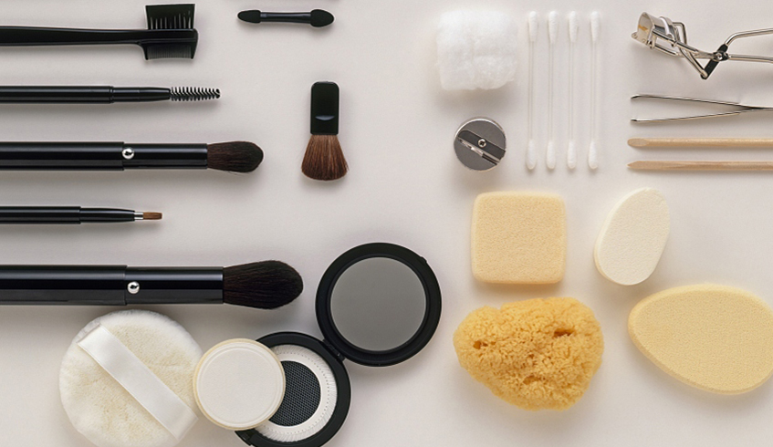
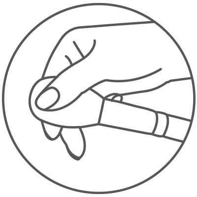
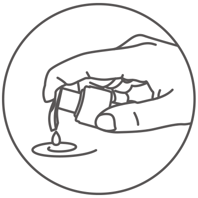
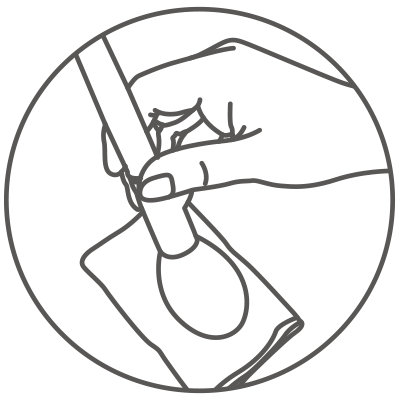

-
化妆笔的清理方法：
- ①每次使用后，在卫生纸上来回抚动将剩余的化妆粉清理干净。
- ②如果清理不干净，请在微温的水中加入清洁剂（非碱性），然后轻轻揉洗。洗净后请注意笔上不要残
- ③留清洁剂，用手指挤压出残留水分，整理好刷毛形状后自然晾干即可。
- ※化妆笔在制造时采用高温洗净处理，刚开始使用时有掉色的情况。染料使用安全染料，对产品品质和肌肤不会造成影响，请放心使用。
-



-
使用时的注意事项：
- ①用水冲洗和使用干燥机（吹风机）会损伤笔刷，请避免使用。
- ②刚开始使用时，刷毛会有气味，随着使用时间变长气味会渐渐消失。（对气味的感觉会因人而异）
- ③为防治霉变，请避免密闭状态及潮湿。